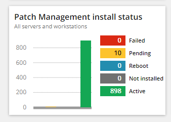
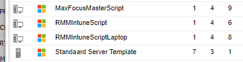

Security controles Werkstations
Algemeen
Voor onderstaande controles kunnen de bestanden worden opgeslagen in "Monta Services BV\Serviceteam - IT Operations - Documenten\Operations\Werkstations\RMM Controles"
Security Controles
RMM : Patch failure report draaien en oplossen (laatste 2 dagen selecteren).
Via : Reports\Patch management\failure reports.
Als het er heel veel zijn, alleen security-patches oplossen.
Ga hiervoor naar "Settings \ Patch Management \ Workflow". Filter op Failed. Selecteer alle patches, kies proceed en dan "reprocess failed".
Bij gefaalde patches die terug blijven komen moet een PC overgenomen worden om de patch handmatig te draaien, het kan ook nodig zijn om de PC te vervangen.
RMM: Missing Patches nogmaals approven.
Via : Settings\Patch management\Management Workflow (selecteer status "missing")
Vanuit het RMM Dashboard "patch Management install status" beoordelen en oplossen.

Vanuit Device Inventory Report alle devices zonder automated tasks opsporen.
Op deze devices de standaardtemplate toepassen.
Server = "Standaard Server Template"
Laptops = "RMMIntuneScriptLaptop"
Montatrons = "RMMIntuneScript"
Overig devices zonder Intune = "MaxFocusMasterScript".
